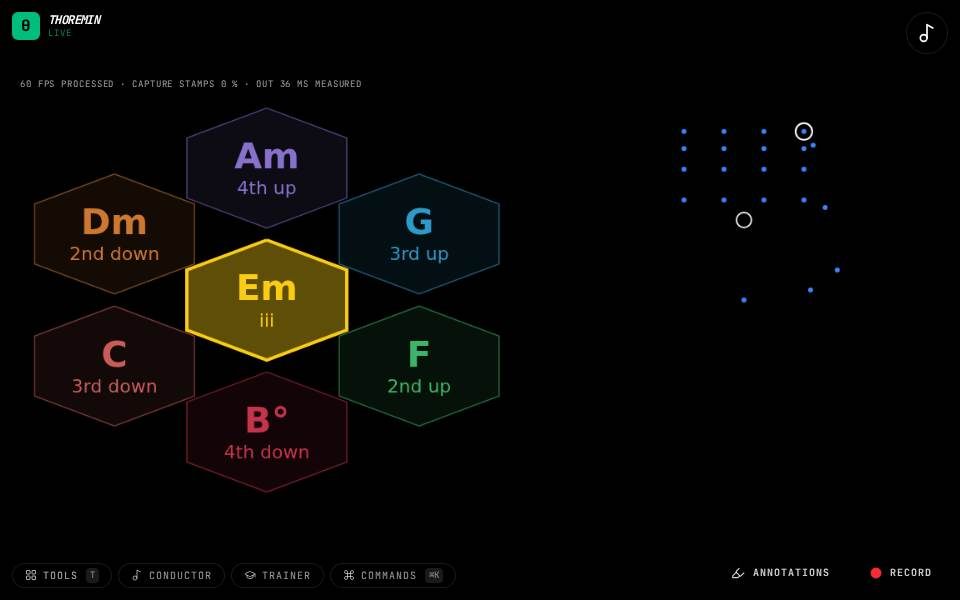

Instruments › Chords and harmony
Chord Wheel

What to do
- Hold your left hand in the middle of the wheel: that chord keeps sounding.
- Push the hand toward one of the moves around it and hold a moment.
- The chord changes to that move, and the wheel recentres on it.
The chord you are on sits in the middle; the ways to leave it sit around it. Push toward one to go there.
How it works
Around the chord in the middle are the key's six moves from it: up a fourth, down a fourth, to the relative chord, and so on, each labelled with the chord it leads to. Push your hand out past a small dead zone toward a move and hold it there briefly; the chord changes and the wheel turns so the new chord is in the middle. Each change is played smoothly, every voice moving as little as it can.
Settings
Chord wheel in the editor: which moves (the key's, or the Tonnetz's, which leave the key); which hand steers, and with what; the wheel's size; how far to push and how long to hold before a move is made; walking on the beat; the tension shown under each chord and which model measures it; the order of the moves (fixed, or the likeliest next chord on top); and what keeps the beat for arpeggios. The key and how chords sound are in Sound.
Its settings: Chord wheel, Sound. Every knob: the manual.